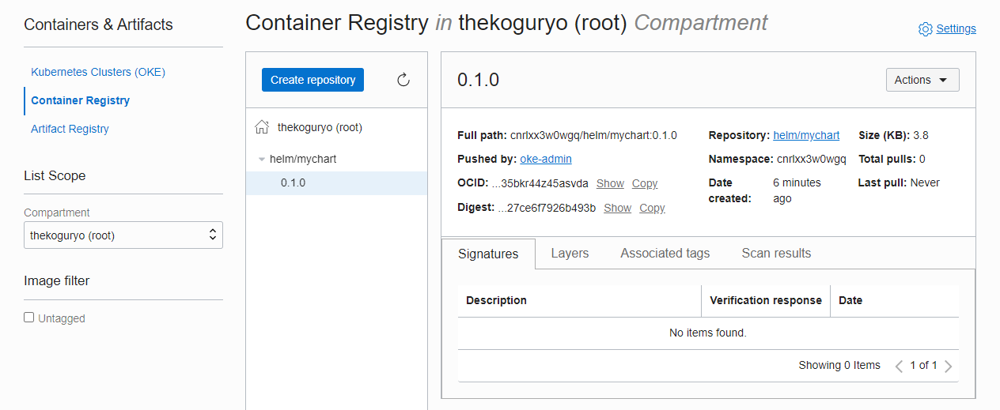
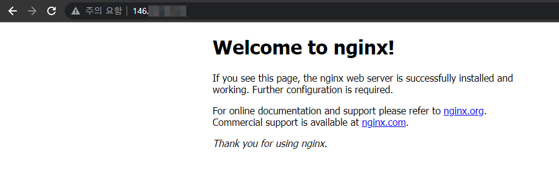

2.2 Helm Chart Repository로 사용하기
OCIR은 OCI(Open Container Initiative) Registry로 Helm 3에서는 현재 OCI Registry를 실험적(experimental)인 기능으로 지원하고 있습니다.
Helm CLI 환경 준비
-
helm cli를 사용할 Cloud Shell 또는 작업환경에 접속합니다.
-
helm cli 3.7 설치
OCI Registry인 OCIR에 차트를 등록하기 위해서는 helm 3.7에서 제공하는 helm push 명령을 사용해야 원활히 됩니다. 문서 작성일 기준으로 현재 Cloud Shell에 기본 설치된 helm cli 버전은 3.5.4 여서 3.7을 추가 설치합니다.
wget https://get.helm.sh/helm-v3.7.1-linux-amd64.tar.gz tar -zxvf helm-v3.7.1-linux-amd64.tar.gz linux-amd64/helm mv linux-amd64/helm ~/.local/bin/ -
.bashrc의 PATH에 등록
PATH=$HOME/.local/bin:$HOME/bin:$PATH -
OCI Support 활성화
helm cli에서 OCI Registry 지원은 실험적 기능으로 사용을 위해 다음 환경변수를 설정이 필요합니다.
export HELM_EXPERIMENTAL_OCI=1
Helm Chart 생성후 등록하기
샘플 차트 만들기
Helm Chart Template Guide 예제를 따라 만든 샘플 차트를 OCIR 등록 해봅니다.
-
테스트를 위해 차트를 만듭니다.
oke_admin@cloudshell:helm (ap-seoul-1)$ helm create mychart Creating mychart -
차트 작성
생성된 차트는 nginx를 배포하는 샘플 차트입니다. 실제 차트 작성을 위해서는 앱에 맞게 수정하겠지만, 지금은 배포 테스트로 수정없이 그냥 사용합니다.
-
차트 패키징
helm package명령으로 패키징합니다.oke_admin@cloudshell:helm (ap-seoul-1)$ cd mychart oke_admin@cloudshell:mychart (ap-seoul-1)$ helm package . Successfully packaged chart and saved it to: /home/oke_admin/works/helm/mychart/mychart-0.1.0.tgz oke_admin@cloudshell:mychart (ap-seoul-1)$ ls charts Chart.yaml mychart-0.1.0.tgz templates values.yaml
OCIR 로그인 및 Helm Chart Push
OCIR에 docker cli로 로그인 할때와 동일하게 사용자와 Auth Token을 사용해 로그인합니다. 이전 내용을 참고합니다.
-
앞서 생성한 Auth Token을 통해 Cloud Shell 또는 접속 환경에서 helm cli로 로그인 합니다.
- OCIR 주소:
<region-key>.ocir.io- region-key: 서울 Region은 ap-seoul-1 또는 icn
- 전체 Region 정보: Availability by Region
- username:
<tenancy-namespace>/<username>형식- Username: OCI 서비스 콘솔에서 유저 Profile에서 보이는 유저명을 사용합니다.
- Oracle Identity Cloud Service상의 유저:
<tenancy-namespace>/oracleidentitycloudservice/<username> - OCI Local 유저:
<tenancy-namespace>/<username>
- Oracle Identity Cloud Service상의 유저:
- tenancy-namespace: 앞서 Repository 생성시 확인한 tenancy-namespace 또는 Cloud Shell에서
oci os ns get으로 확인 가능
- Password: 앞서 생성한 로그인할 유저의 Auth Token
oke_admin@cloudshell:mychart (ap-seoul-1)$ oci os ns get { "data": "cnrlxxxxxxxx" } oke_admin@cloudshell:mychart (ap-seoul-1)$ helm registry login -u ${tenancy_namespace}/oke-admin ap-seoul-1.ocir.io Password: Login Succeeded - OCIR 주소:
-
Helm Chart Push
- OCIR에 생성한 Repository로 Push 하기 위해 아래 형식 Push 하면 됩니다. 그러면 repo-prefix/ 을 포함하여 repository 가 생성됩니다.
<region-key>.ocir.io/<tenancy-namespace>/<repo-prefix>
- mychart 예시
oke_admin@cloudshell:mychart (ap-seoul-1)$ helm push ./mychart-0.1.0.tgz oci://ap-seoul-1.ocir.io/${tenancy_namespace}/helm Pushed: ap-seoul-1.ocir.io/cnrlxx3w0wgq/helm/mychart:0.1.0 Digest: sha256:842486615ee4398001092a9b2f931320add0ecd13885e039427ce6f7926b493b - OCIR에 생성한 Repository로 Push 하기 위해 아래 형식 Push 하면 됩니다. 그러면 repo-prefix/ 을 포함하여 repository 가 생성됩니다.
-
OCIR 확인
OCI 서비스 콘솔에서 OCIR을 보면 Push한 차트가 정상적으로 등록된 것을 알 수 있습니다. 예제는 편의상 root compartment로 push 하였습니다.
- 하위 compartment로 push하는 경우 사전에 repository를 만들어야 합니다. 예, helm/mychart repository를 push 전에 만들것

Helm Chart를 OKE 클러스터에 배포하기
-
Cloud Shell 또는 작업 환경에 접속합니다.
-
등록한 Chart로 배포합니다.
helm install mychart oci://ap-seoul-1.ocir.io/${tenancy_namespace}/helm/mychart --version 0.1.0 -
배포 예시
oke_admin@cloudshell:mychart (ap-seoul-1)$ helm install mychart oci://ap-seoul-1.ocir.io/${tenancy_namespace}/helm/mychart --version 0.1.0 --set service.type=LoadBalancer NAME: mychart LAST DEPLOYED: Fri Dec 3 15:17:51 2021 NAMESPACE: default STATUS: deployed REVISION: 1 NOTES: 1. Get the application URL by running these commands: NOTE: It may take a few minutes for the LoadBalancer IP to be available. You can watch the status of by running 'kubectl get --namespace default svc -w mychart' export SERVICE_IP=$(kubectl get svc --namespace default mychart --template "{{ range (index .status.loadBalancer.ingress 0) }}{{.}}{{ end }}") echo http://$SERVICE_IP:80 oke_admin@cloudshell:mychart (ap-seoul-1)$ kubectl get all NAME READY STATUS RESTARTS AGE pod/mychart-76677cc888-rl4v6 1/1 Running 0 55s NAME TYPE CLUSTER-IP EXTERNAL-IP PORT(S) AGE service/kubernetes ClusterIP 10.96.0.1 <none> 443/TCP 32m service/mychart LoadBalancer 10.96.198.136 146.xxx.xxx.xxx 80:30926/TCP 56s NAME READY UP-TO-DATE AVAILABLE AGE deployment.apps/mychart 1/1 1 1 56s NAME DESIRED CURRENT READY AGE replicaset.apps/mychart-76677cc888 1 1 1 55s -
배포 앱 접속 확인

** 이 글은 개인으로서, 개인의 시간을 할애하여 작성된 글입니다. 글의 내용에 오류가 있을 수 있으며, 글 속의 의견은 개인적인 의견입니다. **